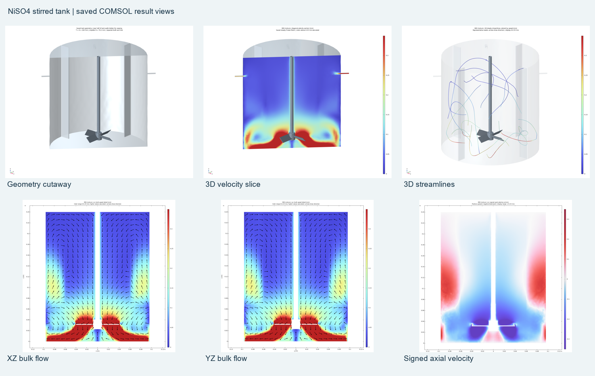
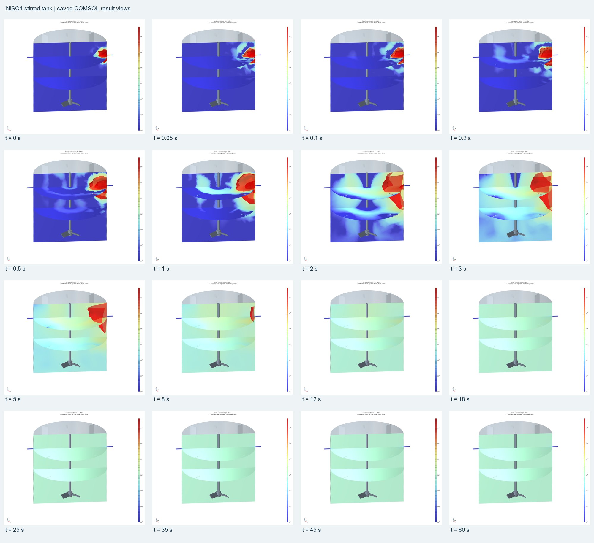

Stirred-tank crystallisation
Baffled stirred-tank flow, tracer mixing, compartment population balances and coupling to the Aspen crystallisation process.


Result scope
Animation: one initialized 360° turn over 0.1665 s of physical time, displayed in slow motion. Instantaneous streamlines show velocity directions; they are not crystal trajectories. Cyclic steady state and experimental validation are not established.